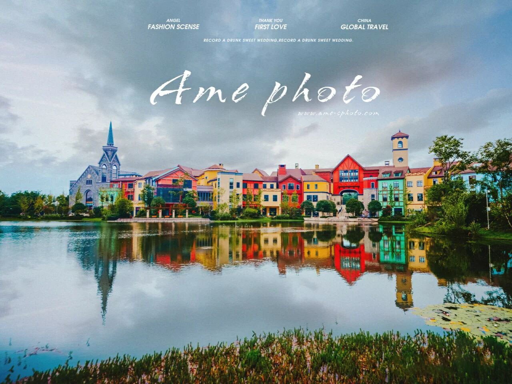

捕捉光线的造型 试着像画家一样观察光线
当拍照片的时候，试着这样思考：像个画家一样来进行创作。绘画是一个叠加的过程：画家将绘画叠加到画布上，而摄影基本上是减法：摄影师通过仔细的构图和裁剪，从场景中减去不需要的或分散注意力的元素，以创造场景的视觉或印象。
当摄影师像画家一样思考的时候，像画家一样拍摄和处理图像时，图像会看起来更具创造性和艺术性。在这里，创造性的形象化也是关键。是的，我们希望获得最佳的图像效果，但是有了Photoshop、Lightroom和其他成像程序和插件，我们还有一个额外的好处，就是能够控制文件中的每一个像素，并在数字文件中添加绘画效果。
单点对焦就是将对焦点直接对准所拍主体的某一部位，以突出该部位的高清晰度。 在不进行设置的情况下相机的对焦点都是在画面的中间位置，这个在大多数情况下没有问题。但是在有些时候就不实用，需要大家手动去决定对焦点的位置。 毕竟不是每一张照片的主体都在画面的中心位置，即使你使用“先对焦后构图”的方法也不一定能解决，特别是在景深很浅的情况下。 所以需要把相机的自动对焦模式设置为单点自动对焦，而不是多点或自动对焦点选择。

滤镜的使用，中灰渐变镜一般是方形的，在渐变镜的一端是中灰镜一样的灰色部分，而在另一端是透明的。当你遇到画面光比过大的情况，那么你就可以使用中灰渐变滤镜来拍摄了。它能对两个区域进行测光，计算出两个区域的曝光差异，然后根据计算的结果选择不同档位的滤镜来平衡画面的光比。